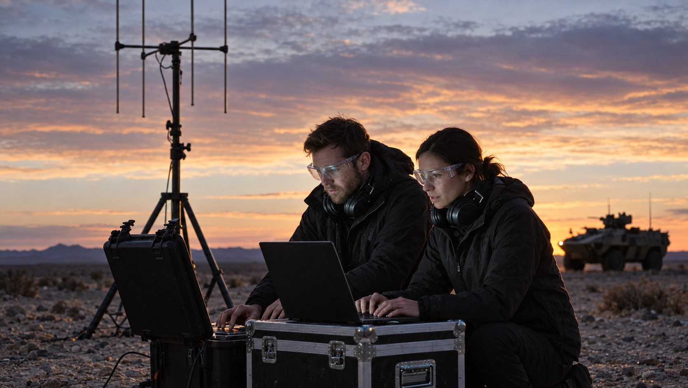

Huntsville, AL
Headquarters and one of three Centers of Excellence, with Washington, DC, and Burlington, Massachusetts.
Mission solutions portfolio
Astrion engineers, integrates, and proves the systems warfighters and operators depend on, under the conditions they will face, before those systems reach the field.
01 Mission segments
Each segment stands on its own program record. What connects them is one discipline: prove a capability under conditions that mirror the mission before it is fielded.
The integration of capabilities to defend the homeland, the joint force, and allies against the full spectrum of air and missile threats, including ballistic missiles, cruise missiles, hypersonic weapons, and unmanned aircraft systems.
The integrated planning and execution of weapon system testing and lifecycle management. The integrated employment of offensive and defensive cyberspace operations, and cryptologic capabilities.
The synchronized detection, identification, tracking, and defeat capabilities. Integrated employment of multi-domain autonomous systems.
The integrated employment of military spacepower to achieve and sustain space superiority: the freedom of movement and action in, from, and to space for the United States and its allies while denying the same to adversaries.
The integrated capabilities required to identify, assess, prevent, detect, respond to, mitigate, and recover from threats and hazards to the U.S. Homeland.
The integration of transportation, power, communications, mobility, habitation, autonomy, and in-situ resource utilization required to establish and sustain an enduring human and robotic presence on and around the Moon, creating the foundation for expansion deeper into the solar system.
02 Portfolio
Each solution area states the promise it makes, the mission it serves, and the ways Astrion plays. Filter by segment, or read the full set.
Directing the layers of the missile defeat fight at the speed of battle.
Connect and orchestrate the IAMD enterprise to optimize theater and strategic defense at the scale and complexity of today's threat.
Integrate command, control, communications, computers, intelligence, surveillance, and reconnaissance into a resilient BMC2 environment that gives commanders a trusted operational picture and the tools to act on it.
Trusted tracking using modern tip-and-cue webs for maximum real-time coverage.
Track the threat from left-of-launch to elimination.
Enhance the quality, veracity, and precision of today's sensor networks while preparing for the evolution of tomorrow's sensing capabilities. Combine multi-phenomenology insights to ensure kill web closure.
Layered defense for the theater and the homeland.
Optimize the kill chain. Expand defeat options. Deliver affordable capacity.
Integrate kinetic and non-kinetic effectors into strategic layered defenses that respond to theater and strategic threats, including missiles, aircraft, and emerging kinetic threats to the U.S. and its allies.
America's mission readiness and modernization business.
Cyber operations, EW, and cryptology, united for mission assurance.
Seize and hold the initiative in the cyber domain.
Make cyber warfare operationally decisive. Unite cyber operations, EW, and cryptology to preserve mission assurance, freedom of action, and combat advantage across contested domains and connected environments.
Realistic ranges, digital environments, and operational scenarios.
Accelerate test-to-field. Generate V&V evidence. Build mission confidence.
Test, evaluate, and train the force in realistic ranges, digital environments, and operational scenarios, turning mission data into the evidence, insight, and warfighter confidence needed to reduce risk, accelerate fielding, and prevail in contested environments.
Ready for today's mission, prepared for tomorrow's fight.
Assure mission readiness. Accelerate modernization. Enable combat overmatch.
Continuously test, sustain, modernize, and validate the mission systems that make up America's Arsenal of Democracy, so warfighters stay ready for today's mission and prepared for tomorrow's fight.
Emerging technology, turned into mission-ready capability.
Rapidly integrate new capabilities. Quantify risk. Scale mission advantage.
Connect sensors, platforms, software, and operators across domains to give the Department the speed, interoperability, and technological advantage needed to deter and prevail against near-peer threats.
Innovative solutions to complex threats.
Create insurmountable tactical challenges for the enemy.
Develop, deploy, and sustain layered defensive systems for C-UAS that operate across the spectrum of conflict, from the homeland to hostile environments.
The new modern battlefield.
Deliver smart and independent capability to the fighting edge.
Enable modern autonomous warfare through intelligent systems, resilient communications, and robust system design.
Connecting the battlefield.
Deliver precision targeting and rapid counter-barrage capability that closes the sensor-to-shooter gap across every echelon.
Fuse targeting, sensor, and fires data into a single engagement picture, enabling precision strikes and rapid counter-battery response at the point of contact.
Mission integration solutions that turn space data into decision advantage.
Deliver a mission-ready, data-connected space enterprise that turns sensing, targeting, threat, and cyber information into faster, trusted decisions.
Integrate proven digital engineering, AI-enabled mission solutions, and test capabilities across space sensing, targeting, missile tracking, security, and cybersecurity to optimize the mission systems the U.S. and its allies depend on for space support to operations.
Integrating EW, OW, and Space C2 for space superiority.
Enable joint and coalition decision advantage by integrating EW, OW, and Space C2 into a resilient, AI-enabled mission-engineering ecosystem, connecting space-defined kill webs and multi-domain effects from detection through execution.
Turn operational credibility, mission access, and engineering depth into reusable Space Control solutions that close integration seams and improve decision speed across the future fight.
Delivering responsive launch and engineering modernization.
Ensure the U.S. and its allies can deliver payloads to orbit when and where they need to, while enhancing the space vehicles already on orbit.
Build assured access to orbit through resiliency, availability, and reliability, from the range through ascent, payload deployment, on-orbit servicing, and global mission operations.
Winning in, from, and to space.
Own the energy advantage in orbit: power, propulsion, and the wargaming tools to prove it before the fight.
Advance chemical, photovoltaic, and nuclear power and propulsion across every orbital regime, and deliver the modeling, simulation, and visualization tools that let U.S. warfighters and allies design, train to, and validate future force structure.
Building resilience into the systems that move America.
Modernize and safeguard the systems that move America through mission-threaded engineering, test, safety, and cyber resilience.
Advance mission continuity across FAA, TSA, CBP, airports, ports, and selected maritime systems as transportation becomes more connected, automated, and cyber-dependent.
Resilience for high-consequence energy systems.
Harden high-consequence energy systems with nuclear-grade engineering, cyber assurance, test, and operate-through resilience.
Equip NRC, DOE/NNSA, national labs, utilities, SMR developers, and other energy owners to assess, validate, and sustain high-consequence systems across cyber, safety, reliability, and operations.
Sustaining the industrial base behind defense.
Convert cyber-physical risk into mission evidence, readiness decisions, and resilient operations for defense-critical operators.
Secure mission continuity across DoD, depots, shipyards, industrial facilities, production sites, and defense suppliers by mapping dependencies, testing degraded operations, and validating recovery.
Lunar mission assurance for building the next world.
Flight readiness, multi-vendor integration, and digital engineering.
Know the risk. Assure the mission before it launches.
Integrate multi-provider systems, verify safety-critical interfaces, and convert NASA and Rapid Capabilities Office mission heritage into reusable assurance, V&V, and digital-engineering offerings.
Safe habitation and expansion on the Moon and beyond.
Safely site, operate, and protect infrastructure on the Moon.
Support safe habitation and expansion on the Moon and beyond by capturing, characterizing, and mitigating power and infrastructure risk as part of an integrated lunar architecture.
Assure, prove, operate, commercialize.
Operate the Moon as a managed system-of-systems.
Coordinate crewed and uncrewed assets, landing zones, hazard areas, traffic routes, power and comms nodes, logistics, and sustainment using bounded autonomy and trusted operational data.
Assurance for building the next world.
Prove capability in mission-relevant environments.
Model, simulate, test, and validate payloads, autonomy, and mission systems before deployment, so NASA and commercial providers are ready for the hostile space environment.
03 Approach
Astrion stands at the intersection of innovation and operational reality. We turn breakthrough ideas into field-ready capability: fast, proven, and mission-informed.
Engineering discipline, software, AI, and mission expertise combine so a capability performs in the field the way it performed in test.
Innovation fuels it. Engineering proves it. Astrion makes it mission-ready.

Requirements, architecture, and digital models built against the mission, not the demo.
Sensors, effectors, software, and platforms brought together across domains and services.
Validated in the lab, on the range, and in the field under conditions that mirror the fight.
Kept current as threats, data, and missions change.
04 Track record
05 Company
Formed from ERC and Oasis Systems, joined by Axient in 2024. Headquartered in Huntsville, Alabama, with Centers of Excellence there, in Washington, DC, and in Burlington, Massachusetts, and teams in 36 states and the Netherlands.
The first woman to earn a Ph.D. in aeronautical engineering from Caltech. Her company, ERC, combined with Oasis Systems to form Astrion.
LegacyHeadquarters and one of three Centers of Excellence, with Washington, DC, and Burlington, Massachusetts.
Closest to the program offices and policy decisions that shape the mission.
One of three Centers of Excellence, with Huntsville, Alabama, and Washington, DC.
The division landing page: mission areas, the AI and ModelOps spine, and the leaders accountable for the work.
Open the division page06 Contact
Program offices, primes, and technology partners: start with a conversation about where you need capability proven, not just promised.